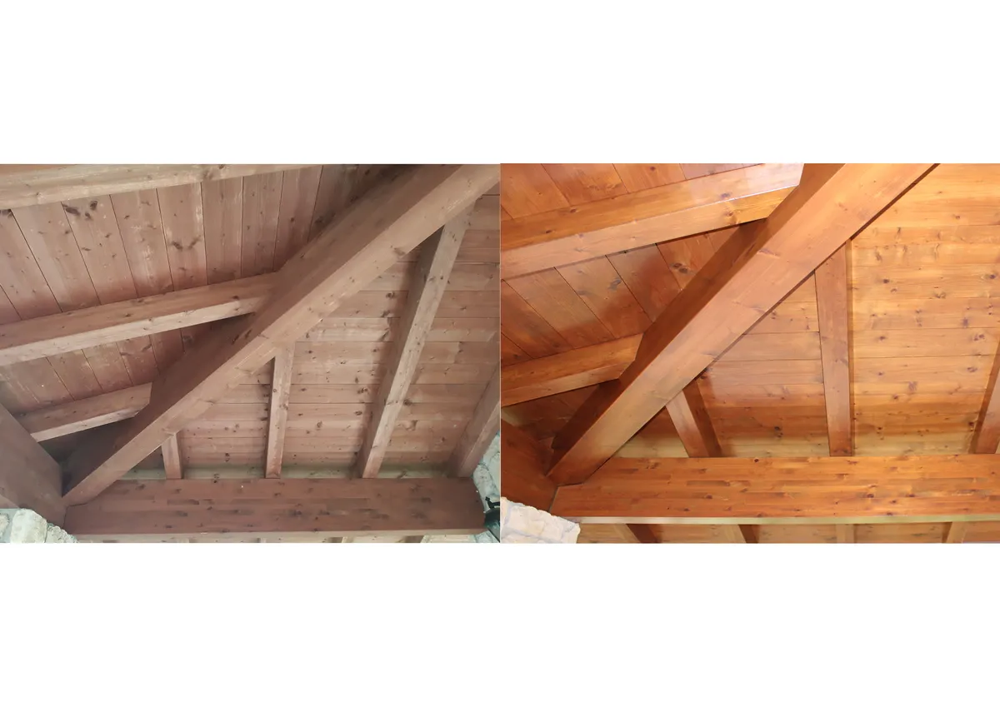

Perchè Proteggere il Legno
-
Levigatura Micrometrica:
Carteggiatura approfondita delle vecchie vernici sfogliate o degradate per ripristinare la fibra naturale a nudo.
-
Trattamenti Protettivi UV:
Stesura di impregnanti protettivi UV-safe che prevengono l'ingrigimento solare e l'attacco di funghi o tarli.
-
Finiture Elastiche ad Acqua:
Smalti ed impregnanti cerosi microporosi che respirano assecondando i micromovimenti naturali del legno.
Analisi e Sopralluogo Tecnico
Contattaci per programmare una verifica dello stato delle tue strutture in legno. Ti forniremo un preventivo dettagliato e trasparente.
Ottieni Preventivo
Restauro e Verniciatura di Infissi e Scuri
Il legno è un materiale pregiato, caldo e vivo, che conferisce valore a qualsiasi contesto architettonico. Tuttavia, scuri, persiane, infissi e travature esterne risentono costantemente dell'umidità, del sole e dei cicli di gelo. La ditta **Imbianchini Padova** è specializzata nel restauro conservativo e nel ripristino di ogni elemento strutturale e decorativo in legno.
Interventi e Lavorazioni su Legno:
- Sverniciatura e Carteggiatura: Rimozione completa degli strati vetusti di smalto tramite levigatura meccanica controllata, senza danneggiare il supporto.
- Trattamenti Curativi e Antiparassitari: Trattamenti antitarlo e funghicidi inodori, indispensabili per la stabilità a lungo termine di tetti e solai in legno.
- Impregnanti di Fondo all'Acqua: Prodotti ad altissima penetrazione che colorano e proteggono la struttura lignea, schermandola dalle radiazioni UV.
- Finiture Ecologiche Ceroso-Opache: Barriere protettive traspiranti ed elastiche che non sfogliano, facilitando i futuri interventi di manutenzione periodica.
Meticolosità e Cura Artigianale
Un restauro del legno a regola d'arte richiede competenza artigianale ed estrema precisione. Nelle nostre lavorazioni a Padova utilizziamo esclusivamente cicli di verniciatura ecocompatibili all'acqua. Questi formulati di ultima generazione mantengono un'eccezionale elasticità molecolare nel tempo: si dilatano e si contraggono con il legno, evitando fessurazioni o crepe. Ciò garantisce intervalli di manutenzione raddoppiati rispetto alle vecchie vernici sintetiche a base solvente.
Dettagli tecnici e cura nel tempo
Valutare legno e vecchia finitura
Controlla umidità, parti degradate e adesione del rivestimento esistente. Non chiudere sotto una nuova finitura legno ancora umido. Carteggiatura, rimozione degli strati sfogliati e trattamento dei punti scoperti precedono il ciclo di protezione.
Impregnante o smalto?
L’impregnante valorizza la venatura; uno smalto coprente cambia l’aspetto del manufatto. Fondo e finitura devono essere compatibili tra loro e con il vecchio ciclo. Su essenze ricche di tannino può essere necessario un fondo specifico: prima della stesura completa serve una prova.
Rispetta i tempi di asciugatura e programma controlli più frequenti sui lati esposti a sole e pioggia, intervenendo prima che il film si sfogli.